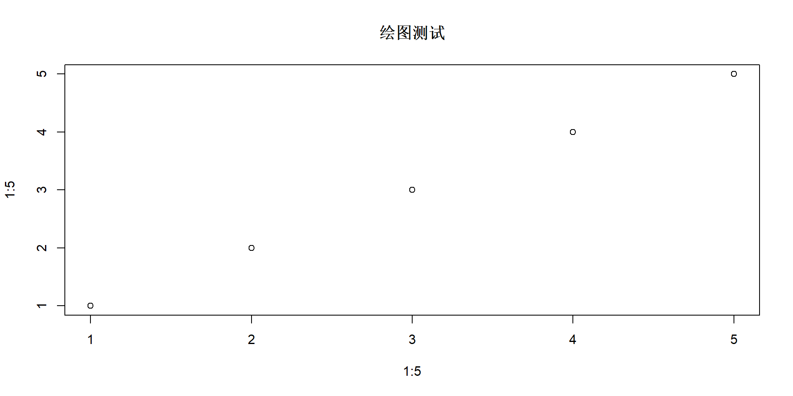

[1] 5[1] 3R语言的标准赋值符号是<-,快捷键为Alt+ -,也允许使用=进行赋值 代码运行可以点击运行按钮，也可以用快捷键Ctrl+Enter键
R 包类似于Python 里的模块（module /package），就是别人提前写好、打包在一起的一堆现成 R 函数，拿来直接调用，不用自己从零写代码。

向量是一维数组，通常可由c函数创建 向量的数据类型可以是数值型、字符串或者逻辑型（TRUE或FALSE）
R语言中向量的索引从1开始
二维数组，其中的每个元素都是相同的数据类型
基本语法
常用参数
| 参数 | 含义 |
|---|---|
| data | 放入矩阵中的数据 |
| nrow | 行数 |
| ncol | 列数 |
| byrow | 是否按行填充 |
数据框是R语言中最常用的数据类型之一，类似于Excel表格或SQL数据库中的表格。数据框可以包含不同类型的数据（数值型、字符型、逻辑型等），每列可以有不同的数据类型。
学生姓名 统计学 数学 经济学
1 刘文涛 68 85 84
2 王宇翔 85 91 63
3 田思雨 74 74 61
4 徐丽娜 88 100 49
5 丁文斌 63 82 89 学生姓名 统计学 数学 经济学
1 刘文涛 68 85 84
2 王宇翔 85 91 63
3 田思雨 74 74 61 学生姓名 统计学 数学 经济学
3 田思雨 74 74 61
4 徐丽娜 88 100 49
5 丁文斌 63 82 89'data.frame': 5 obs. of 4 variables:
$ 学生姓名: chr "刘文涛" "王宇翔" "田思雨" "徐丽娜" ...
$ 统计学 : num 68 85 74 88 63
$ 数学 : num 85 91 74 100 82
$ 经济学 : num 84 63 61 49 89| 学生姓名 | 统计学 | 数学 | 经济学 |
|---|---|---|---|
| 刘文涛 | 68 | 85 | 84 |
| 王宇翔 | 85 | 91 | 63 |
| 田思雨 | 74 | 74 | 61 |
| 徐丽娜 | 88 | 100 | 49 |
| 丁文斌 | 63 | 82 | 89 |
| 学生姓名 | 统计学 | 数学 | 经济学 |
|---|---|---|---|
| 刘文涛 | 68 | 85 | 84 |
| 王宇翔 | 85 | 91 | 63 |
| 田思雨 | 74 | 74 | 61 |
| 徐丽娜 | 88 | 100 | 49 |
| 丁文斌 | 63 | 82 | 89 |
dplyr提供了多个数据处理函数，并提供了管道操作符“%>%”可以连续操作数据
select函数可选择列变量
mutate可以创建一个新列、修改列
这里放左侧内容。
这里放右侧内容。